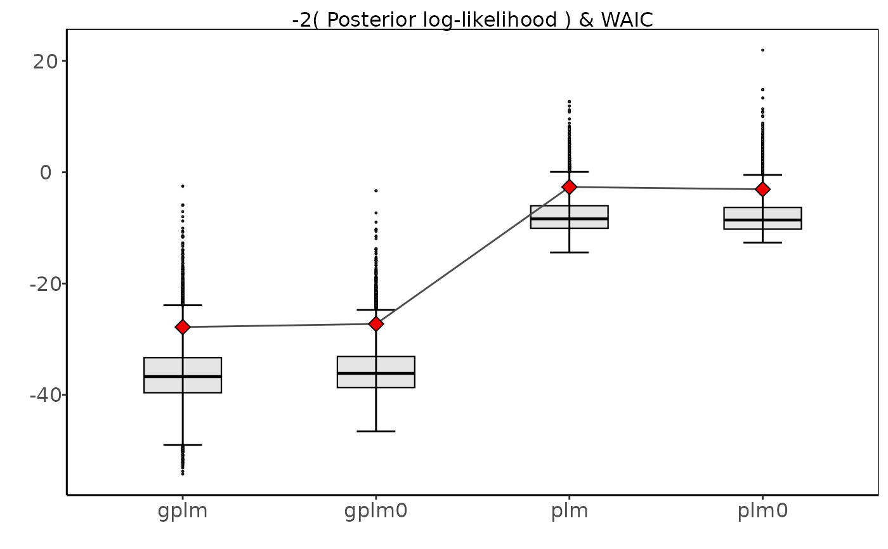

R/tournament_methods.R
autoplot.tournament.RdCompare the four discharge rating curves from the tournament object in different ways
# S3 method for tournament autoplot(x, type = "deviance", ...)
| x | an object of class "tournament" |
|---|---|
| type | a character denoting what type of plot should be drawn. Possible types are
|
| ... | further arguments passed to other methods. |
tournament to run a discharge rating curve tournament and summary.tournament for summaries.
#> Running tournament: #> 25% - gplm finished #> 50% - gplm0 finished #> 75% - plm finished #> 100% - plm0 finished#> round game model B DIC num_eff_param P winner #> 1 1 1 gplm 4.946249e-02 -1.5222648 6.166183 2.731107e-01 FALSE #> 2 1 1 gplm0 1.316453e-01 -0.5360443 6.501155 7.268893e-01 TRUE #> 3 1 2 plm 8.257282e-07 23.5963706 2.993081 4.566934e-01 FALSE #> 4 1 2 plm0 9.823299e-07 23.3192665 2.917275 5.433066e-01 TRUE #> 5 2 3 gplm0 1.316453e-01 -0.5360443 6.501155 9.999925e-01 TRUE #> 6 2 3 plm0 9.823299e-07 23.3192665 2.917275 7.461887e-06 FALSE# }